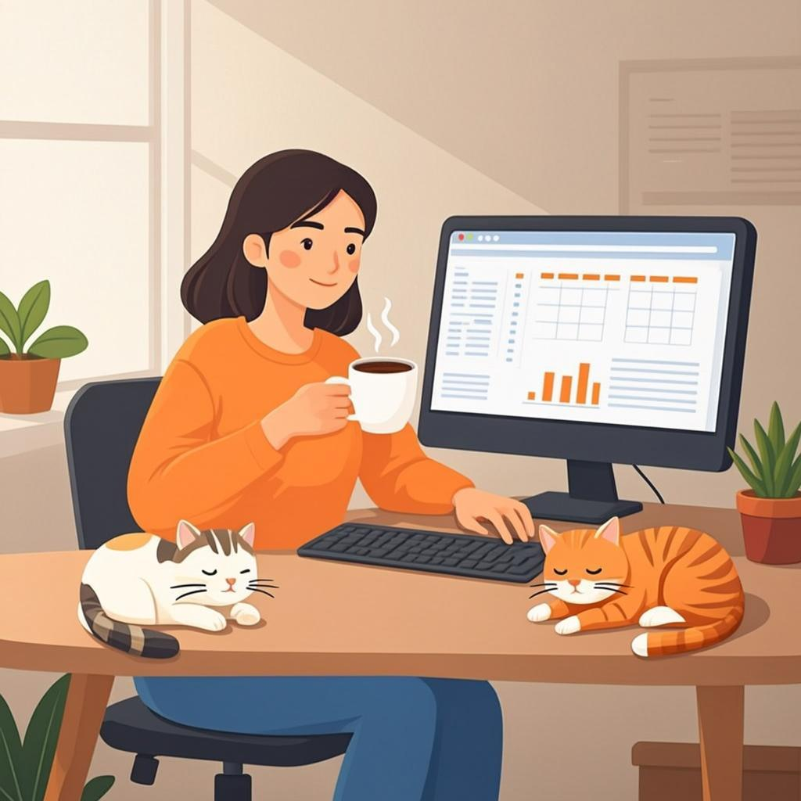
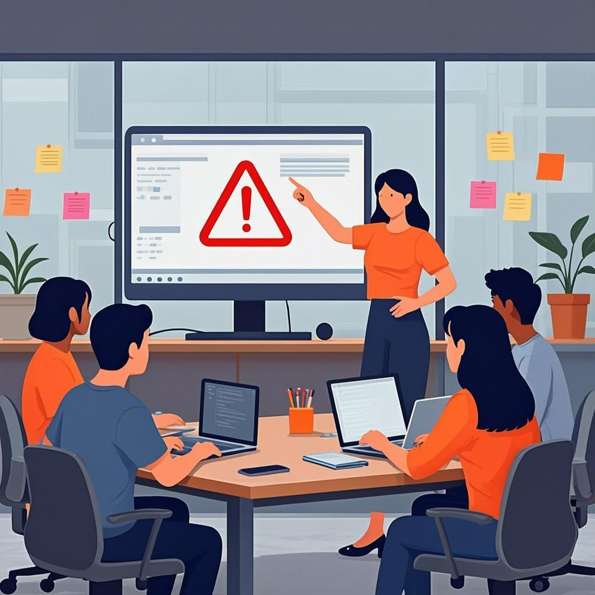

Warm-up
10 minconversation before the rules🎧 Listen to the questions
❓ Six questions — click a card to open the sentence starters
Listening — A Week at Harbour Lights Studio
12 minaudio + comprehension🧩 Before you listen: 10 key words
Click a word — a definition and an example will open. The Russian gloss is there to check your understanding. Listen to the recording of all ten words.
🎧 Track 1 — A Week at Harbour Lights Studio
🌍 Extension — BBC 6 Minute English
From the yearly plan: Can apps teach you a language? ↗
Task: first listen — what do the hosts disagree about? Second listen — write down 3 phrases about learning and routines (for example, it depends on, on a daily basis). This is the homework listening if we don't get to it in class.
Reading — Studio Diary
8 mintext + tense spottingStudio Diary: Week 47
It is November, and the games industry is not slowing down. Small studios across Europe are releasing their winter updates right now, and players are asking for cross-platform saves on every forum. The big publishers usually announce their roadmaps in autumn, and this season is no exception: several teams are opening new mobile projects.
A day in game development still looks ordinary from the inside. Teams have short stand-ups, testers check every build, and someone always forgets to push code before the weekend. Developers repeat one simple truth: games ship on time when people talk to each other early. So if you lead a team, keep the routine boring: one daily meeting, one clear priority, one honest build report. The formula never changes — but everything around it changes every month.
🌍 Extension — The Guardian: Games
Pick any fresh news story of the week: theguardian.com/games ↗
Retell it in 4 sentences following the scheme: what happened → who did it → why it matters → what you think. It makes a perfect opener for Round 4 in the Speaking section.
Grammar — Present Simple vs Present Continuous
15 minrules + 4 exercisesPRESENT SIMPLE — routines, facts, schedules
- Permanent habits: We ship patches every month.
- Facts and rules: The build fails if the tests are red.
- Timetables: The stand-up starts at ten.
PRESENT CONTINUOUS — around us right now
- Action at the moment of speaking: Listen! QA is finding a bug.
- Temporary period: This month we are rebuilding onboarding.
- Trends and changes: Players are demanding cross-play.
⚙️ Mini-table
| Present Simple | Present Continuous | |
|---|---|---|
| Form | I / you / we / they shiphe / she / it ships | am / is / are + V-ingwe are shipping |
| When? | regularly, always, by schedule | now, this week, temporarily, as a trend |
| Your context | I run three sprint meetings a week. | This month we are rebuilding the onboarding level. |
🎬 Video — BBC 6 Minute Grammar (6 min)
🩹 Typical mistakes made by Russian-speaking team leads
🔊 Shadowing — speak along with the speaker
Track A — Present Simple only, Track B — Present Continuous only. Listen to a sentence → repeat it out loud in the pause with the same intonation. Two loops per track.
Grammar → Speaking — the main section of the lesson
10 mingoal: speak without tense-picking pauses🎙 Round 1 — My Working Day Present Simple
Talk about your routine: 60–90 seconds. Use at least 4 Simple markers.
🎙 Round 2 — Right Now at Your Studio Present Continuous
Now only about what is happening right now / this week: 60–90 seconds, at least 4 forms of am/is/are + V-ing.
🖼 Round 3 — Two Pictures: Usually vs Right Now

Present Simple

Present Continuous
Describe both pictures in 90 seconds: what usually happens, and what is happening right now. Mix the tenses the same way Dana does in the audio.
📡 Round 4 — Industry Radar Present Continuous
Five sentences about what is happening in the industry right now. Use the news story you picked in Reading, or fill the templates with your own examples:
⚡ Speed Drill — a time marker every 5 seconds
The teacher (or you yourself) opens a card — and you instantly build a sentence about your work with that marker. Click a card to check the tense and see a sample.
Writing — a message to your team chat
5 min60–100 wordsModel answer — open it after your own version
Hi team! A quick update. On Fridays we usually run the regression tests and publish build notes. I always check crash reports before our stand-up, and QA re-tests the top five bugs.
This week we are doing things a bit differently: we are preparing the winter update, the artists are drawing extra snow levels, and I am meeting the publisher twice. Shout if you need help with the build!
Homework
≤ 30 minutes in total🧑🏫 Teacher notes
Goal: the student talks about routines and current processes, switching between Simple and Continuous without "which tense?" pauses.
Suggested flow: Warm-up with no corrections (collect mistakes in the pocket) → Listening: gist first, details second → Reading: mark the tenses in the text aloud → Grammar: keep the rules short, spend the time on exercises and Speaking → Writing goes to homework if time runs out.
Success criteria: Rounds 1 and 2 — 60+ seconds of continuous speech each; no more than 1 form-choice mistake per round; speed drill — an answer within 5 seconds for 6+ of 8 markers.
Error pocket (typical): I am agree · she is knowing · missing -s in the 3rd person · forgotten am/is/are before V-ing · state verbs in the Continuous (flag briefly, cover deeply in Lesson 2).
Threads: the industry radar from Round 4 → Guardian news in Reading; skiing/cats → echo them again in Lesson 4; Dana's winter-update decision → the "plans" storyline of Module 4.